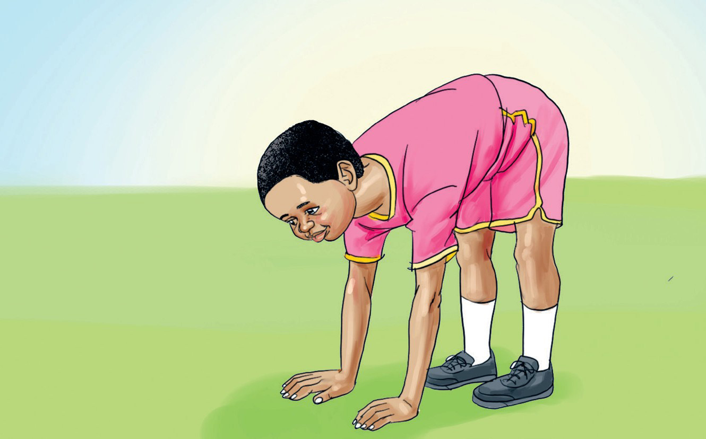

How to stretch by bending forward
1. Stand upright.
2. Bend over and touch the ground.
3. Repeat this process several times.

How to stretch by lying down and lifting one leg at a time
1. Sit down.
2. Lie on your back.
3. Extend your arms downward.
4. Lift one leg.
5. Lower that leg and lift the other one.
6. Repeat this process five times for each leg.